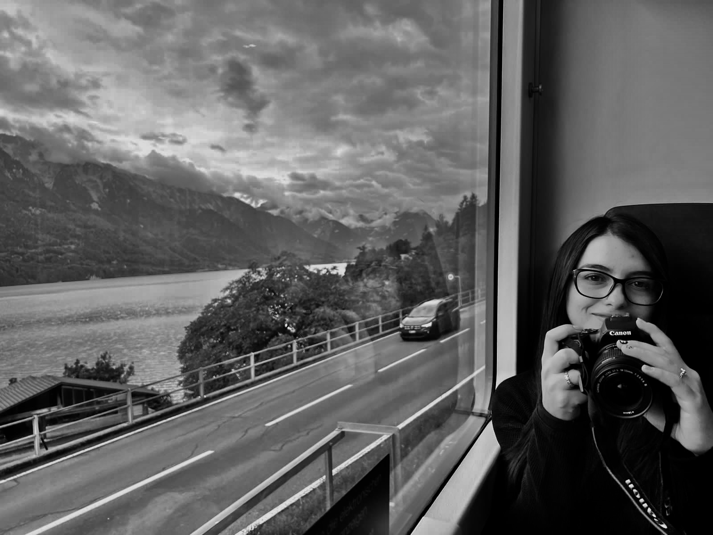

¡Hola! Soy Katherine.
Te doy la bienvenida a mi rincón virtual......
Aquí comparto una selección de las fotos que he capturado durante mis emocionantes viajes por diversas ciudades alrededor del mundo.
Si tuviera que resumir mi vida en breves palabras, diría que cada día valoro la maravillosa experiencia de existir.
Compartir cada momento con mi familia, mi esposo y mi adorable perrita "Alma" me llena de alegría.
Cada día me esfuerzo por ser una versión mejor de mí misma, buscando la felicidad y contagiándola a quienes me rodean.
Mi pasión por la fotografía surgió cuando empecé a explorar diferentes países y me encontré con paisajes que contrastaban
con la belleza de mi querida Bogotá. Esta experiencia me motivó a adquirir una cámara antes de mi próximo viaje,
decidida a capturar los recuerdos que mis ojos atesoraban.
Si alguna de las imágenes en este blog te cautiva, no dudes en contactarme para compartir tus impresiones.
Anhelo que, al igual que yo, encuentres algo que te inspire a probar algo nuevo, que despierte tu curiosidad.
¡Así como yo lo hice con la fotografía!